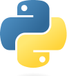
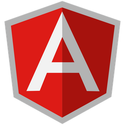

Gabriel Chaves
Futuro Desenvolvedor💻🌎
Suporte TI🔧
Contatos
Celular: +55 (61) 99508-0764
Email: teixeira.gabriel11@gmail.com 📧
Links Redes Sociais: Instagram |  Linkedin | GitHub🔗
Linkedin | GitHub🔗
Download Do Currículo 👉 Clique Aqui ⬇
📍Águas Lindas - Goiás📍
Descrição📑
Tenho 29 anos, sou estudante no terceiro período da graduação em Análise e Desenvolvimento De Sistemas e cursando Programador Full-Stack no SENAI. Tenho boas relações interpessoais, minha carreira profissional foi construída sempre com base no atendimento as pessoas atrelado com a qualidade no serviço prestado. Desde os 13 anos de idade lido com computadores e tecnologias. Sou técnico de informática há mais de 10 anos. Agora estou migrando para entrar na área de desenvolvimento e programação, meu aprendizado é constante e estou sempre disposto para novos desafios!
Objetivos🎯
Preciso de uma oportunidade de trabalho para por em prática o aprendizado, desenvolver minhas habilidades e aumentar meu conhecimento, para ter uma base sólida nessa carreira. Vale a pena me dar essa chance pois garanto que meu empenho e dedicação será o máximo, até mesmo porque sou um amante das tecnologias, ou seja, vai além do trabalho, é um hobbie!
Certificações Conquistadas🏆
- Suporte TI | Certificação Do Google ( Suporte Técnico, Usuário Avançado, Redes, Segurança Cibernética e Infraestrututa De TI )
- Técnico de Informática (SENAI)
- Inglês Nível Básico (Qualifica Cursos)
- Arquitetura de Computadores (Estácio)
- Desenvolvimento Web Em: HTML5, CSS3, JavaScript e PHP (Estácio)
- Segurança da Informação (Estácio)
- Paradigmas de Linguagens de Programação em Python (Estácio)
- Fundamentos Da Qualidade e Produtivade (SENAI)
- Fundamentos Da Tecnologia Da Informação e Comunicação (SENAI)
- Pensamento Computacional (Estácio)
- Engenharia de Usabilidade (Estácio)
- Estrutura de Dados Em C (Estácio)
- Lógica de Programação e Algoritimo (SENAI)
- Computação Em Nuvem (Estácio)
- Git, GitBash (Versionamento) e GitHub (SENAI)
- Comunicaçao Entre Aplicações
- UI | UX Designer (SENAI)
- Modelagem De Sistemas Em UML (Estácio)
- 7ª Imersão Dev (ALURA)
- Trilhas NLW Expert RocketSeat
- SoftSkills (SENAI)


Graduações Em Andamento🚧
- Análise E Desenvolvimento De Sistemas (Tecnólogo - Estácio - Término: 2025)
- Programador Full-Stack (Técnico - SENAI - Término: 2024)
Skills🏅
Windows Avançado - Node.JS - HTML5 - VScode - PHP - Linux - MacOS - Git - GitHub - JavaScript - CSS3 - Bootstrap - XAMPP - Python - C++ - Segurança Cibernética - Suporte TI - Scrum - Gimp - SoftSkills - Fluxograma | Prototipagem - Active Directory - Redes e Protocolos - Impressoras - Power Shell - Bash - Suporte Remoto - Cloud Computing - UI | UX Designer - Angular - UML - TypeScript.
Tecnologias em Aprendizado📚
- Sistemas de Informação e Sociedade
- Aplicação de Cloud, IOT e Indústria 4.0 em Python
- Desenvolvimento de API's
- Desenvolvimento Rápido de Aplicações em Python
- Banco de Dados
- Engenharia de Software
- Tópicos de Big Data em Python
- Programação Orientada a Objetos em Java
- Banco de dados NOSQL
- Programação Para Dispositivos Móveis em Android
- Programação em Python Para Análise de Dados
- Inteligência Artificial Para DEVS
- Word Press
- Padrões de Projetos de Software com Java
Meus Projetos 💻
Meu Primeiro Site Desenvolvido Em: HMTL5, CSS3 e JavaScript
Link Do Site🔗
Página De Curiosidades Sobre O Android 
Desenvolvimento Em Python 
Ligação do Front e Back End Utilizando o Angular
Considerações Finais 🔚
Está página foi criada com o objetivo de por em prática o aprendizado e criar um cartão de visitas. Para concluir, todo o conteúdo apresentado é um roteiro de estudos, seguindo a cronologia das instiuições de ensino. Além dessas tecnologias descritas aqui posso aprender outras caso seja necessário (de acordo com alguma demanda), aprendendo uma por vez para não perder o foco.